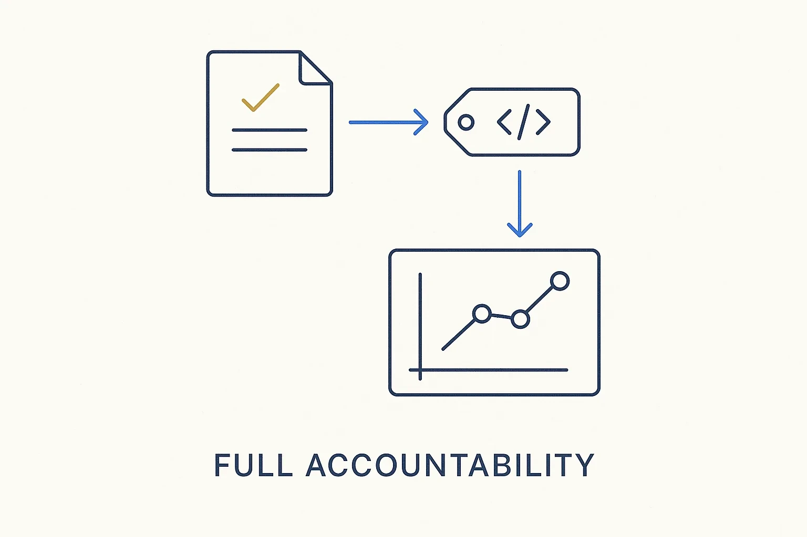

Being measured against what was agreed — the agreement expressed as machine-readable metadata, with clear metrics that show, continuously, whether it is being met.

> Being measured against what was agreed — the agreement expressed as machine-readable metadata, with clear metrics that show, continuously, whether it is being met.
Accountability is the measurable side of ownership. Ownership is the stance you take, a contract is the interface you agree to, and accountability is being held to it — visibly, on evidence, over time. The three belong together: you take responsibility, you write down exactly what was agreed, and you let the metrics say whether it happened. Without the measurement, ownership is a claim; with it, it is a fact.
The BTM requirement is specific: you must be able to explain, in machine-readable form, what was agreed and how it is measured. A responsibility that only lives in a slide or a conversation cannot be monitored, so it cannot really be owned. Expressed as metadata — the contract, the metrics, the thresholds — accountability becomes a query anyone can run: is the agreement being met, yes or no, right now?
This is what turns good intentions into a system. Accountability continuously monitored means a missed agreement surfaces on its own, in time to fix it, instead of being discovered in a post-mortem. Full control, clearly stated, continuously measured — that is accountability with teeth.
Where it lives: the signature principle of Breakthrough Modeling — ownership made measurable.